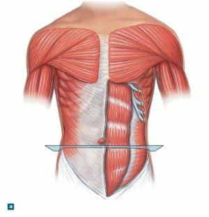
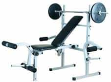
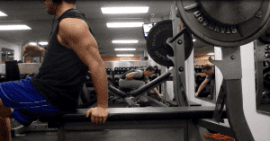
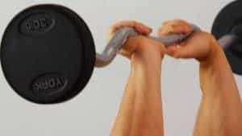

< < < Back
How To Do A Proper Bench Press – Return Of Kings
As I have alluded to in several previous articles, I feel that people should have a base in calisthenics before they begin lifting weights—in other words, if you can’t lift your own body you have no business lifting a weight. And the numerous articles I have written on the Convict Conditioning series of calisthenics will have given you that base if you have done the exercises contained therein faithfully. And thus it is now time to begin a regimen of weight training.
Weights Versus Machines
Free weights are, simply put, better than machines. For not only do the free weights allow your body to move in its natural and full range of motion, it also trains the muscles and CNS to work as a cohesive unit (hence the name “motor unit” to describe the cooperation of neurons and muscle fibers), which will of course make you stronger than the man who has merely made his muscles big and strong. And it is here, with all this talk of motor units and multiple muscle groups working in unison, that we can begin to analyze the humble bench press.
A Bench Overview
If I had to do a workout consisting of just two exercises, I—and most fitness gurus worth their salt—would say “The deadlift and any sort of press.” Those two combined will work the majority of muscles in your body. For today, I have deigned to do the bench press, mainly because it’s the only one I already had footage of myself doing.
The bench press will develop the pectorals, triceps, and shoulders predominantly, with some auxiliary work done for the forearms and hands. While I feel it is not the be-all-and-end-all-of upper body workouts (mainly because the overhead press is more likely to be something you’ll use in a practical real life situation), it is advocated by power athletes like Olympic level shotputters. Or, in the words of Pavel Tsatsouline, “For all the debate over the usefulness of the bench press, if you met someone with a 600 pound bench press, would you want to take a punch from them?”

The bench press, like any lift worth doing, is one that has a julienne of variations to it: close grip, wide grip, different types of bar, incline, decline, one handed, etc. But for our purposes today, this article will strictly deal with the standard, shoulder width bench press with a “closed grip.” It will serve most of your pectoral training needs, particularly when done in conjunction with other upper body exercises (as a side note, I only do the standard bench press, since unlike your average “upper body day every day” gym stereotype, I have a day job and thus time is of the essence).
Like most exercises, there are a couple of constants common to all types of bench press regardless of the variation being performed. The first is that the bar must GENTLY touch the chest before going back up. Gentleness is the key for reasons that are so obvious, I don’t think they have to be gone over.
Secondly, throughout any type of bench press, the feet should be pressing down hard on the floor, causing the back to slightly arch-and I emphasize SLIGHTLY. This will give you a little bit of a “boost” in your lifting and enable you to lift a few pounds more than you could have otherwise thanks to the previously detailed magic of proprioceptive muscular tension.
How To Do A Bench Press
With all that being said, this section will then go over how to actually do the standard bench press. The first step is, of course, to find a weightlifting bench, characterized by the little hooks for a bar, and likely a bar as well.

Once you have found the bench, place the bar on the top rung of platforms, and place yourself under the bar, approximately so the bar is directly over the top of your pectoral muscles. Placing the bar on its highest setting will make starting the exercise easier, rather than expending effort on something that is not actually part of the exercise.

Yours truly warming up with 205 pounds. My max is 225 (or rather, it was, before my car accident put me on the shelf)
The bar can be held with a variety of grips, but for beginners I would advocate just a regular fist grip, also called the “closed grip.” Just hold the bar naturally, with the four fingers around the bar and the thumb clenching the fingers. Let the hands find the position they want to find, push down hard with your feet to arch your back, and then push up with your arms and hold the bar over your head.
NOTE: The bench press is the only exercise that I would advocate having a partner or spotter with you, for the obvious reason that failing a bench press leaves an unliftable weight planted firmly on your chest.

An open grip bench, note that the thumbs are not wrapped around the bar and fingers
Once you’ve lifted the bar into the start position, keeping the feet pressing throughout the entirety of the exercise, lower the bar down in a smooth, controlled motion, touch the chest, and bring it back up to the start position.
The amount of repetitions and sets you do is your choice, but my personal preference is to use heavy compounds lifts to develop maximal strength, meaning: low sets, low reps, high weight (I feel that high repetitions of weights increases the risk of injury, particularly for beginners who haven’t mastered proper form). In contrast, I choose to develop muscular endurance with calisthenics.
And of course, good form with a lighter weight is preferable to half-assing a heavy weight.
Regardless of how many repetitions you choose to do, the bench press is an exercise you need to have in your gym repertoire.
Read More: 5 Bench Press Mistakes That Will Stall Your Progress